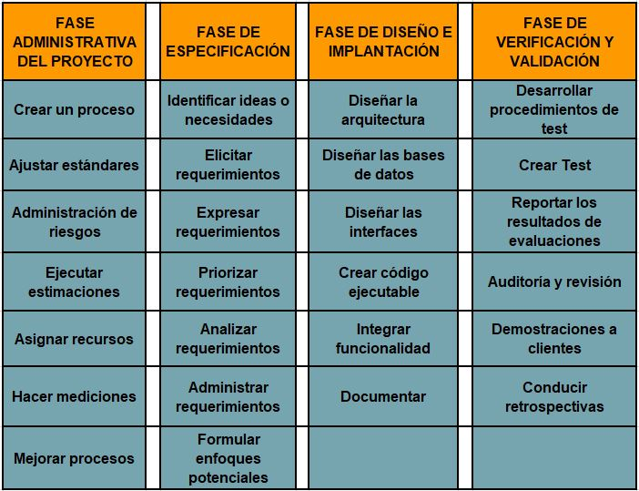
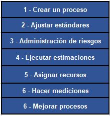
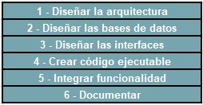

En esta área se evalúa la capacidad de elegir metodologías, técnicas y herramientas para modelado de la solución del problema mediante la selección adecuada del lenguaje de programación y de la herramienta de implementación, realizando la codificación y validación de la misma. Además se evalúan las técnicas de implantación del sistema y su simulación basada en modelos matemáticos.
En esta subárea se evalúan los siguientes temas:
Antes del desarrollo de la solución del problema es importante que identifiques las actividades llevadas a cabo en la ingeniería de Software:

Para entender el desarrollo de un proyecto de software es importante que comprendamos que establecer un proceso es el punto inicial de todo proyecto de software. Un proceso está organizado en distintas fases y cada fase contiene distintas actividades y tareas, relacionadas entre sí.
El ciclo de vida de un software se refiere al proceso que cubre todo el espectro, desde la incepción del proyecto, hasta su posible retiro del mercado.
Del bloque de actividades de software, cada una de ellas puede contener varias tareas, por ejemplo, de la actividad crear Test tenemos las tareas, escribir test, diseñar test, ejecutar test.
Las tareas pueden tener dependencias entre ellas, por ejemplo, una tarea no puede iniciarse, si antes no se termina una de la cual es dependiente.
Otros ejemplos de tareas son: Escribir código fuente, escribir documentación, instalar una biblioteca.
Adoptar un proceso en particular será clave en la estructuración del trabajo y el éxito de un proyecto de software. Diseñar un proceso puede iniciarse desde ceros, o puede uno basarse en uno de los varios Modelos de Proceso que ya se han diseñado y usado con éxito.
Los procesos de software se dividen en los siguientes rubros:
Las actividades de esta fase son:

Es sumamente importante porque ajusta la forma y el modelo en que se trabajará el proyecto.
Trata de estandarizar convenciones en la escritura del código, niveles de documentación, estrategias de testing y aspectos como cuando un trabajo es considerado como terminado.
Consiste en administrar los riesgos: Técnicos, administrativos, de negocios, de tiempos, y de seguridad. El producto de trabajo de esta actividad es un Plan de riesgos.
Esta actividad implica asignar tiempos a cuánto tarda en ejecutarse una tarea.
Trata de establecer métricas para hacer un seguimiento y verificación de la calidad de un producto o proceso.
Actividades de Fase de Diseño e implantación.
Las actividades de esta fase son:

El análisis trata sobre QUÉ SE VA A CONSTRUIR y el diseño DE CÓMO SE VA A CONSTRUIR. En este apartado es importantes diferenciar los modelos y patrones de diseño utilizados más comúnmente, como es el caso de MVC.
Tipos de arquitecturas comunes:
Una base de datos diseñado correctamente nos brinda una solución a varios problemas del procesamiento de datos, evita la redundancia de datos y admite un entorno dinámico en tiempo real.
Un sistema de gestión de bases de datos (DBMS) es una colección de herramientas e interfaces que permite a los usuarios actualizar, administrar ,agregar, acceder y analizar el contenido de un conjunto de datos. Una de las principales ventajas de un DBMS es que ofrece acceso a datos interactivos, fexibles y oportunos.